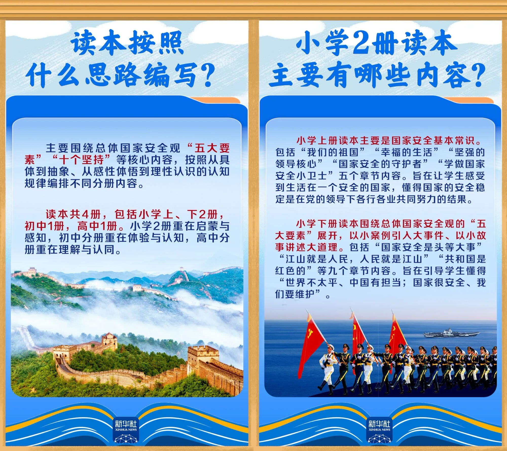
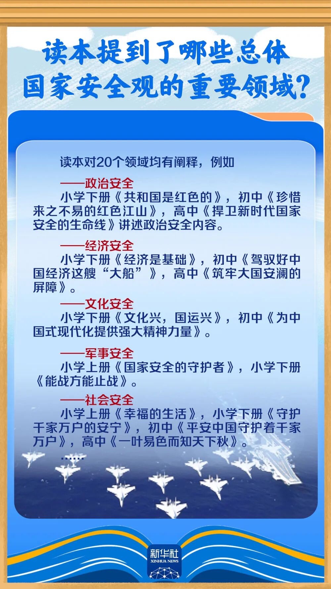
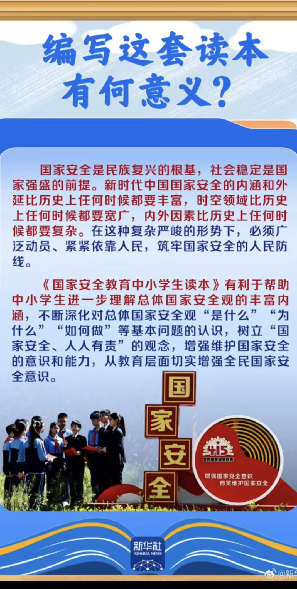

Sorcerer（三周目版）互fo寻回🍥🏳️⚧️
@Sorcerer198964
这玩意根本没人看
我高中的时候收到的类似读物第一时间扔垃圾桶



李老师不是你老师
@whyyoutouzhele
最新国安读本教小学生 "党的领导"
4月14日，教育部宣布，《国家安全教育中小学生读本》正式出版发行。
小学上册引导学生理解 "国家的安全稳定是在党的领导下各行各业共同努力结果"。
初中读本引导学生初步树立 "国家利益至上" 观念。
高中读本围绕"十个坚持"展开。 https://t.co/iGkdElsS92